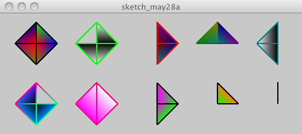

size(500, 200, P3D); background(200); strokeWeight(2); beginShape(TRIANGLE_FAN); fill(255,0,0);vertex(60, 50); fill(0,255,0);vertex(60, 15); fill(0,0,255);vertex(95, 50); fill(128,128,0);vertex(60, 85); fill(128,0,128);vertex(25, 50); fill(0,0,128);vertex(60, 15); endShape(); stroke(0,255,0); beginShape(TRIANGLE_FAN); fill(0);vertex(160, 50); fill(255);vertex(160, 15); fill(0);vertex(195, 50); fill(255);vertex(160, 85); fill(0);vertex(125, 50); endShape(); stroke(255,0,0); beginShape(TRIANGLE_FAN); fill(128,0,0);vertex(260, 50); fill(128,0,128);vertex(260, 15); fill(0,0,128);vertex(295, 50); fill(0,128,128);vertex(260, 85); fill(128,128,128);vertex(260, 15); endShape(); beginShape(TRIANGLE_FAN); stroke(0,128,128);fill(0,128,128);vertex(360, 50); stroke(0,0,128);fill(0,0,128);vertex(360, 15); stroke(128,0,128);fill(128,0,128);vertex(395, 50); stroke(0,128,0);fill(0,128,0);vertex(325, 50); stroke(128,128,0);fill(128,128,0);vertex(360, 15); endShape(); stroke(0,128,128); beginShape(TRIANGLE_FAN); fill(0);vertex(460, 50); fill(255);vertex(460, 15); fill(0);vertex(460, 85); fill(255);vertex(425, 50); fill(0);vertex(460, 15); endShape(); beginShape(TRIANGLE_FAN); stroke(0,255,128);vertex(60, 150); fill(0,128,255);vertex(95, 150); vertex(60, 185); stroke(255,0,128);vertex(25, 150); fill(128,0,255);vertex(60, 115); endShape(); fill(255); beginShape(TRIANGLE_FAN); vertex(160, 115); vertex(195, 150); fill(255,0,255);vertex(160, 185); vertex(125, 150); vertex(160, 115); endShape(); stroke(0); beginShape(TRIANGLE_FAN); vertex(260, 150); vertex(260, 115); fill(0,255,0);vertex(295, 150); vertex(260, 185); endShape(); beginShape(TRIANGLE_FAN); vertex(360, 150); fill(255,128,0);vertex(360, 115); vertex(395, 150); endShape(); beginShape(TRIANGLE_FAN); vertex(460, 150); fill(0,0,255);vertex(460, 115); endShape();